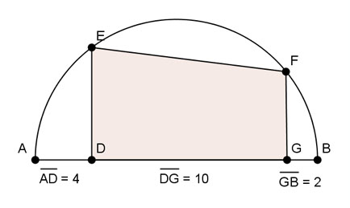

Pythagoras Aufgabe 85 Berechnen Sie die farbige Trapezfläche A in mm².  Höhensatz: (Wegen Thaleskreis ist ein Dreieck mit der Spitze in E und der Grundseite AB ein rechtwinkliges) Höhensatz: DE² = AD * DB DE² = 4 mm * (10 mm + 2mm) = 48 mm² |√ DE = 6,9 mm Höhensatz: (Wegen Thaleskreis ist ein Dreieck mit der Spitze in F und der Grundseite AB ein rechtwinkliges) GF² = AG * GB GF² = (10 mm + 4 mm) * 2 mm = 28 mm² |√ GF = 5,3 mm DE + GF A = --------- * DG 2 6,9 mm + 5,3 mm A = ----------------- * 10 mm = 61 mm² 2